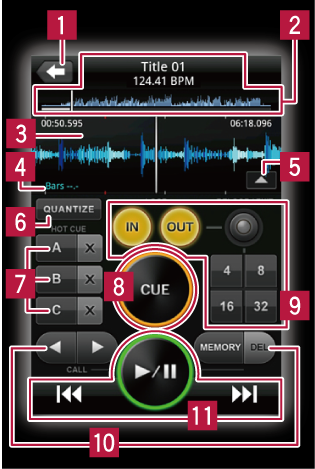

Панели rekordbox
Панель проигрывателя

 Используется для возврата на уровень выше (панель просмотра).
Используется для возврата на уровень выше (панель просмотра).
 Название, ВРМ и общий дисплей формы сигнала
Название, ВРМ и общий дисплей формы сигнала
 Увеличенный дисплей формы сигнала
Увеличенный дисплей формы сигнала
 Позиции ударов, обнаруженные в процессе анализа музыкального файла отображаются серыми точками в верхней и нижней частях увеличенного дисплея формы сигнала.
Позиции ударов, обнаруженные в процессе анализа музыкального файла отображаются серыми точками в верхней и нижней частях увеличенного дисплея формы сигнала.
 Производит обратный отсчет количества измерений до следующей метки или петли.
Производит обратный отсчет количества измерений до следующей метки или петли.
- Количество измерений обозначается слева от точки, количество оставшихся ударов отображается справа.